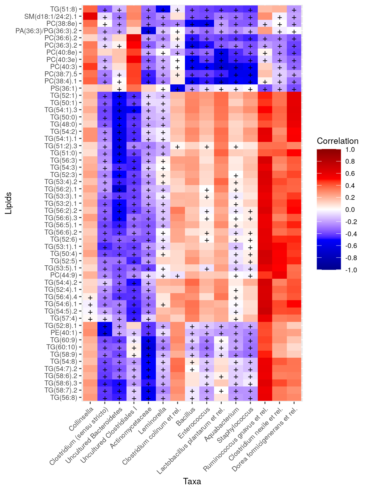
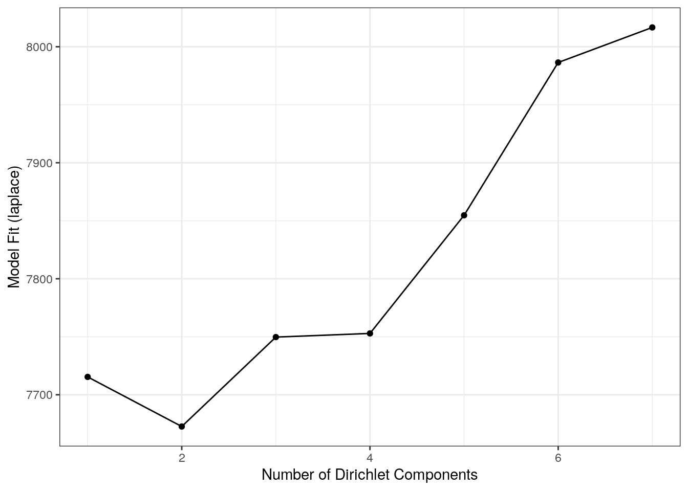
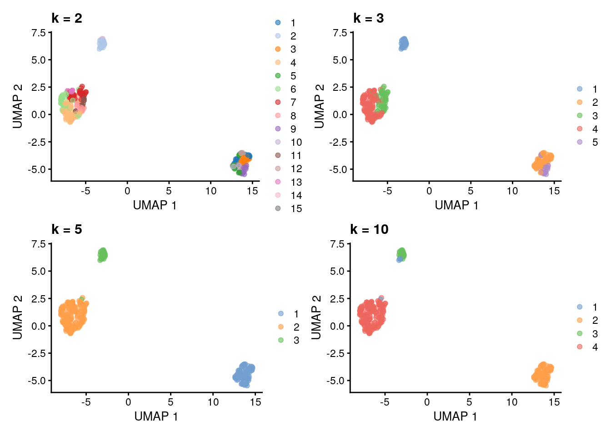
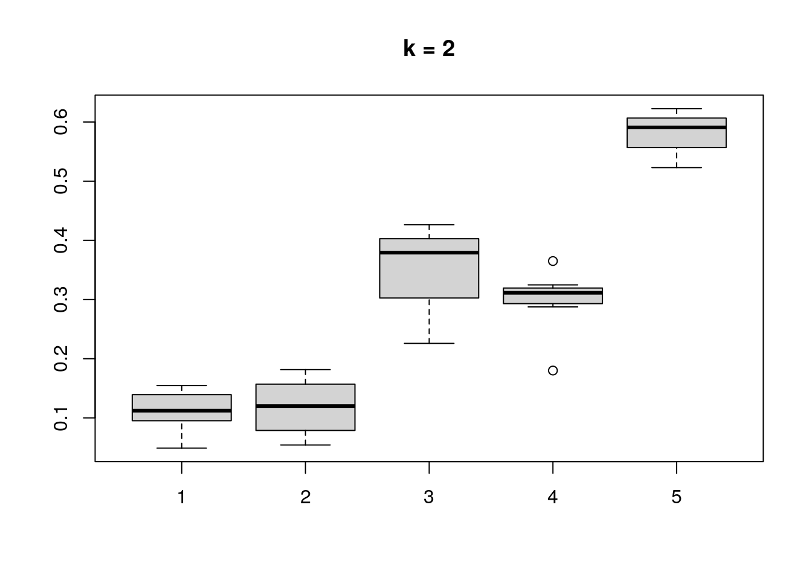
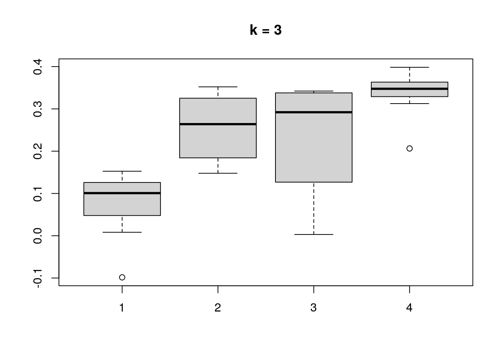
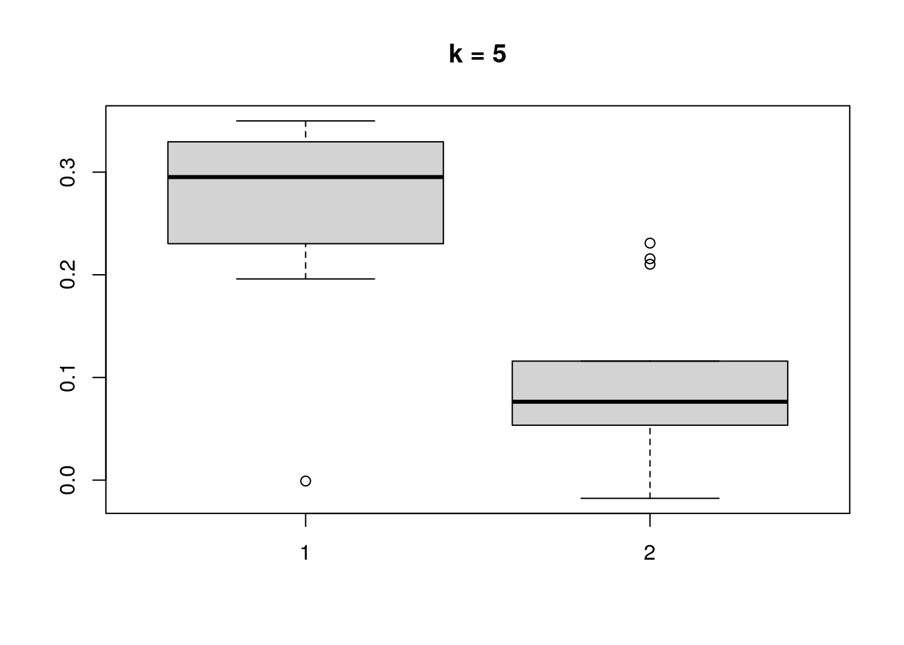
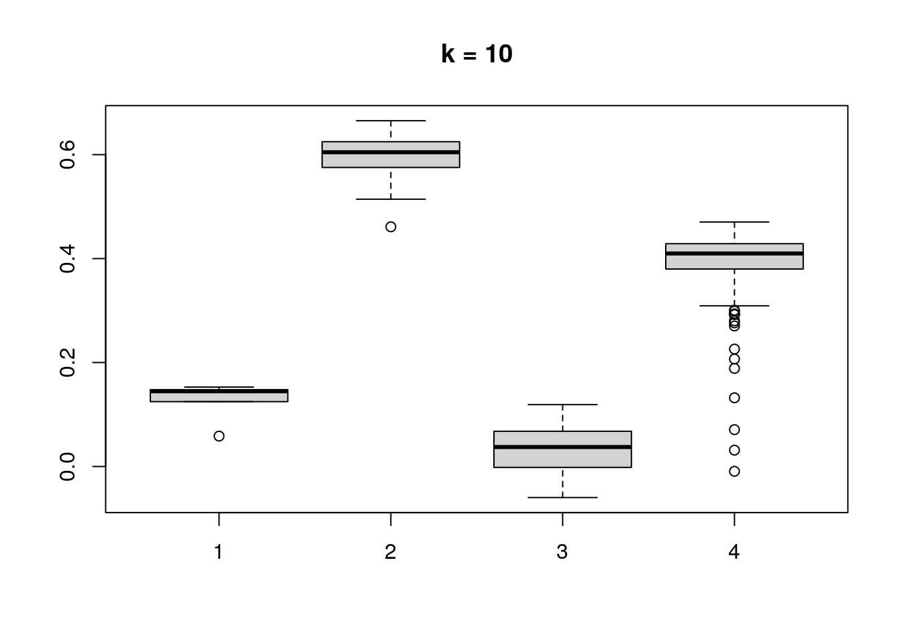

Chapter 10 Cross-correlation
With cross-correlation analysis, we can analyze how strongly and how different variables are associated between each other. For instance, we can analyze if higher presence of specific taxon equals to higher level of biomolecule.
Here, we analyze associations between taxa correlate and lipids. Data is from following publication Lahti et al. (2015) Associations between the human intestinal microbiota, Lactobacillus rhamnosus GG and serum lipids indicated by integrated analysis of high-throughput profiling data.
# Imports the data
tse <- microbiomeDataSets::peerj32()
# Microbiome data
tse[[1]] ## class: TreeSummarizedExperiment
## dim: 130 44
## metadata(0):
## assays(1): counts
## rownames(130): Actinomycetaceae Aerococcus ... Xanthomonadaceae
## Yersinia et rel.
## rowData names(3): Phylum Family Genus
## colnames(44): sample-1 sample-2 ... sample-43 sample-44
## colData names(0):
## reducedDimNames(0):
## mainExpName: NULL
## altExpNames(0):
## rowLinks: NULL
## rowTree: NULL
## colLinks: NULL
## colTree: NULL# Lipid data
tse[[2]]## class: SummarizedExperiment
## dim: 389 44
## metadata(0):
## assays(1): counts
## rownames(389): Cer(d18:1/16:0).1 Cer(d18:1/16:0).2 ... TG(60:11)
## TG(60:9)
## rowData names(0):
## colnames(44): sample-1 sample-2 ... sample-43 sample-44
## colData names(0):if(!require(microbiome)){
BiocManager::install("microbiome")
}
# Does log10 transform for microbiome data
tse[[1]] <- transformSamples(tse[[1]], method = "log10", pseudocount = 1)
# Gets microbiome and lipid data to cross-correlate
x <- t(assay(tse[[1]], "log10"))
y <- t(assay(tse[[2]], "counts"))
# Cross correlates data sets
correlation_table <- microbiome::associate(x, y, method = "spearman", mode = "table",
p.adj.threshold = 0.05, n.signif = 1)
knitr::kable(head(correlation_table))| X1 | X2 | Correlation | p.adj | |
|---|---|---|---|---|
| 552 | Ruminococcus gnavus et rel. | TG(54:5).2 | 0.7165 | 0.0023 |
| 614 | Uncultured Bacteroidetes | TG(56:2).1 | -0.6964 | 0.0039 |
| 100 | Lactobacillus plantarum et rel. | PC(40:3) | -0.6737 | 0.0051 |
| 252 | Ruminococcus gnavus et rel. | TG(50:4) | 0.6912 | 0.0051 |
| 357 | Ruminococcus gnavus et rel. | TG(52:5) | 0.6806 | 0.0051 |
| 537 | Ruminococcus gnavus et rel. | TG(54:4).2 | 0.6820 | 0.0051 |
Manipulates and reorders the table
if(!require(reshape2)){
install.packages("reshape2")
}
if(!require(dplyr)){
install.packages("dplyr")
}
# Gets taxa that has at least one statistically significant correlation
taxa <- correlation_table %>% dplyr::filter(p.adj < 0.05 & abs(Correlation) > 0) %>%
dplyr::select(X1) %>% unique %>% sapply(as.character)
# Gets taxa that has at least one statistically significant correlation
lipids <- correlation_table %>% dplyr::filter(p.adj < 0.05 & abs(Correlation) > 0) %>%
dplyr::select(X2) %>% unique %>% sapply(as.character)
# Takes only those taxa and lipids that has statistically significant values
correlation_table <- correlation_table[correlation_table[["X1"]] %in% taxa &
correlation_table[["X2"]] %in% lipids, ]
# Converts data to matrix, correlations as values
mat <- reshape2::acast(correlation_table, X2 ~ X1, value.var = "Correlation")
# Hierarchical clustering, gets the order of taxa and lipids
taxa_indices <- hclust(as.dist(1 - cor(mat, use="pairwise.complete.obs")))$order
order_taxa <- colnames(mat)[taxa_indices]
lipids_indices <- hclust(as.dist(1 - cor(t(mat), use="pairwise.complete.obs")))$order
order_lipids <- rownames(mat)[lipids_indices]
# Converts taxa and lipids columns to factor so that they have desired order
correlation_table[["X1"]] <- factor(correlation_table[["X1"]], levels = order_taxa)
correlation_table[["X2"]] <- factor(correlation_table[["X2"]], levels = order_lipids)Creates the heatmap
# Determines the scaling of colours
limits <- c(-1, 1)
breaks <- seq(from = min(limits), to = max(limits), by = 0.2)
colours <- c("darkblue", "blue", "white", "red", "darkred")
# Which observation have p-value under 0.05? --> creates a subset
cor_table_sub <- correlation_table[which(correlation_table[["Correlation"]] < 0.05), ]
# Creates a ggplot object
ggplot(correlation_table, aes(x = X1, y = X2, fill = Correlation)) +
geom_tile() +
scale_fill_gradientn(name = "Correlation",
breaks = breaks, limits = limits, colours = colours) +
# Adds label to those observations that have p-value under 0.05
geom_text(data = cor_table_sub, aes(x = X1, y = X2, label = "+")) +
theme(text = element_text(size=10),
axis.text.x = element_text(angle=45, hjust=1),
legend.key.size = unit(1, "cm")) +
labs(x = "Taxa", y = "Lipids")
10.1 Community typing
10.1.1 Dirichlet Multinomial Mixtures (DMM)
This section focus on DMM analysis.
One technique that allows to search for groups of samples that are similar to each other is the Dirichlet-Multinomial Mixture Model. In DMM, we first determine the number of clusters (k) that best fit the data (model evidence) using Laplace approximation. After fitting the model with k clusters, we obtain for each sample k probabilities that reflect the probability that a sample belongs to the given cluster.
Let’s cluster the data with DMM clustering.
# Runs model and calculates the most likely number of clusters from 1 to 7.
# Since this is a large dataset it takes long computational time.
# For this reason we use only a subset of the data; agglomerated by Phylum as a rank.
tse <- GlobalPatterns
tse <- agglomerateByRank(tse, rank = "Phylum", agglomerateTree=TRUE)
tse_dmn <- runDMN(tse, name = "DMN", k = 1:7)# It is stored in metadata
tse_dmn## class: TreeSummarizedExperiment
## dim: 67 26
## metadata(1): DMN
## assays(1): counts
## rownames(67): Phylum:Crenarchaeota Phylum:Euryarchaeota ...
## Phylum:Synergistetes Phylum:SR1
## rowData names(7): Kingdom Phylum ... Genus Species
## colnames(26): CL3 CC1 ... Even2 Even3
## colData names(7): X.SampleID Primer ... SampleType Description
## reducedDimNames(0):
## mainExpName: NULL
## altExpNames(0):
## rowLinks: a LinkDataFrame (67 rows)
## rowTree: 1 phylo tree(s) (66 leaves)
## colLinks: NULL
## colTree: NULLReturn information on metadata that the object contains.
names(metadata(tse_dmn))## [1] "DMN"This returns a list of DMN objects for a closer investigation.
getDMN(tse_dmn)## [[1]]
## class: DMN
## k: 1
## samples x taxa: 26 x 67
## Laplace: 7715 BIC: 7802 AIC: 7760
##
## [[2]]
## class: DMN
## k: 2
## samples x taxa: 26 x 67
## Laplace: 7673 BIC: 7927 AIC: 7842
##
## [[3]]
## class: DMN
## k: 3
## samples x taxa: 26 x 67
## Laplace: 7690 BIC: 8076 AIC: 7948
##
## [[4]]
## class: DMN
## k: 4
## samples x taxa: 26 x 67
## Laplace: 7741 BIC: 8282 AIC: 8112
##
## [[5]]
## class: DMN
## k: 5
## samples x taxa: 26 x 67
## Laplace: 7910 BIC: 8599 AIC: 8386
##
## [[6]]
## class: DMN
## k: 6
## samples x taxa: 26 x 67
## Laplace: 7952 BIC: 8850 AIC: 8594
##
## [[7]]
## class: DMN
## k: 7
## samples x taxa: 26 x 67
## Laplace: 8105 BIC: 9118 AIC: 8820Show Laplace approximation (model evidence) for each model of the k models.
library(miaViz)
plotDMNFit(tse_dmn, type = "laplace")
Return the model that has the best fit.
getBestDMNFit(tse_dmn, type = "laplace")## class: DMN
## k: 2
## samples x taxa: 26 x 67
## Laplace: 7673 BIC: 7927 AIC: 784210.1.2 PCoA for ASV-level data with Bray-Curtis; with DMM clusters shown with colors
Group samples and return DMNGroup object that contains a summary. Patient status is used for grouping.
dmn_group <- calculateDMNgroup(tse_dmn, variable = "SampleType", exprs_values = "counts",
k = 2, seed=.Machine$integer.max)
dmn_group## class: DMNGroup
## summary:
## k samples taxa NLE LogDet Laplace BIC AIC
## Feces 2 4 67 1078.3 -106.19 901.1 1171.9 1213
## Freshwater 2 2 67 889.6 -97.28 716.9 936.4 1025
## Freshwater (creek) 2 3 67 1600.3 860.08 1906.3 1674.5 1735
## Mock 2 3 67 1008.4 -55.37 856.6 1082.5 1143
## Ocean 2 3 67 1096.7 -56.21 944.6 1170.9 1232
## Sediment (estuary) 2 3 67 1195.5 18.63 1080.8 1269.7 1331
## Skin 2 3 67 992.6 -84.81 826.2 1066.8 1128
## Soil 2 3 67 1380.3 11.21 1261.8 1454.5 1515
## Tongue 2 2 67 783.0 -107.74 605.1 829.8 918Mixture weights (rough measure of the cluster size).
DirichletMultinomial::mixturewt(getBestDMNFit(tse_dmn))## pi theta
## 1 0.5385 20.60
## 2 0.4615 15.28Samples-cluster assignment probabilities / how probable it is that sample belongs to each cluster
head(DirichletMultinomial::mixture(getBestDMNFit(tse_dmn)))## [,1] [,2]
## CL3 1.000e+00 4.993e-17
## CC1 1.000e+00 3.786e-22
## SV1 1.000e+00 2.018e-12
## M31Fcsw 7.306e-26 1.000e+00
## M11Fcsw 1.061e-16 1.000e+00
## M31Plmr 9.981e-14 1.000e+00Contribution of each taxa to each component
head(DirichletMultinomial::fitted(getBestDMNFit(tse_dmn)))## [,1] [,2]
## Phylum:Crenarchaeota 0.3043 0.1354652
## Phylum:Euryarchaeota 0.2314 0.1468630
## Phylum:Actinobacteria 1.2105 1.0600236
## Phylum:Spirochaetes 0.2141 0.1318413
## Phylum:MVP-15 0.0299 0.0007642
## Phylum:Proteobacteria 6.8423 1.8150916Get the assignment probabilities
prob <- DirichletMultinomial::mixture(getBestDMNFit(tse_dmn))
# Add column names
colnames(prob) <- c("comp1", "comp2")
# For each row, finds column that has the highest value. Then extract the column
# names of highest values.
vec <- colnames(prob)[max.col(prob,ties.method = "first")]Computing the euclidean PCoA and storing it as a dataframe
# Does clr transformation. Pseudocount is added, because data contains zeros.
tse <- transformCounts(tse, method = "clr", pseudocount = 1)
# Gets clr table
clr_assay <- assays(tse)$clr
# Transposes it to get taxa to columns
clr_assay <- t(clr_assay)
# Calculates Euclidean distances between samples. Because taxa is in columns,
# it is used to compare different samples.
euclidean_dist <- vegan::vegdist(clr_assay, method = "euclidean")
# Does principal coordinate analysis
euclidean_pcoa <- ecodist::pco(euclidean_dist)
# Creates a data frame from principal coordinates
euclidean_pcoa_df <- data.frame(pcoa1 = euclidean_pcoa$vectors[,1],
pcoa2 = euclidean_pcoa$vectors[,2])# Creates a data frame that contains principal coordinates and DMM information
euclidean_dmm_pcoa_df <- cbind(euclidean_pcoa_df,
dmm_component = vec)
# Creates a plot
euclidean_dmm_plot <- ggplot(data = euclidean_dmm_pcoa_df,
aes(x=pcoa1, y=pcoa2,
color = dmm_component)) +
geom_point() +
labs(x = "Coordinate 1",
y = "Coordinate 2",
title = "PCoA with Aitchison distances") +
theme(title = element_text(size = 12)) # makes titles smaller
euclidean_dmm_plot
10.2 Community Detection
Another approach for discovering communities within the samples of the data under question, is to run community detection algorithms after building a graph. The following demonstration builds a graph based on the k nearest-neighbors and performs the community detection on the fly.
bluster (Lun 2021) package offers several clustering methods, among which graph-based are
present, enabling the community detection task.
Installing package:
if(!require(bluster)){
BiocManager::install("bluster")
}The algorithm used is “short random walks” (Pons and Latapy 2006).
Graph is constructed using different k values (the number of nearest neighbors to consider during graph construction)
using the robust centered log ratio (rclr) assay data. Then plotting the communities using UMAP (McInnes, Healy, and Melville 2018) ordination as a visual exploration aid.
In the following demonstration we use the enterotype dataset from the (Ernst, Shetty, and Lahti 2020) package.
library(bluster)
library(patchwork) # For arranging several plots as a grid
library(scater)
data("enterotype")
tse <- enterotype
tse <- transformCounts(tse, method = "rclr")
# Performing and storing UMAP
tse <- runUMAP(tse, name="UMAP", exprs_values="rclr")
k <- c(2,3,5,10)
ClustAndPlot <- function(x) {
# Creating the graph and running the short random walks algorithm
graph_clusters <- clusterRows(t(assays(tse)$rclr), NNGraphParam(k=x))
# Results of the clustering as a color for each sample
plotUMAP(tse, colour_by = I(graph_clusters)) +
labs(title = paste0("k = ", x))
}
# Applying the function for different k values
plots <- lapply(k,ClustAndPlot)
# Displaying plots in a grid
(plots[[1]] + plots[[2]]) / (plots[[3]] + plots[[4]])
Similarly the bluster (Lun 2021) package offers clustering diagnostics
that can be used for judging the clustering quality (see Assorted clustering diagnostics).
In the following, Silhouette width as a diagnostic tool is computed and results are visualized
for each case presented earlier. For more about Silhouettes read (Rousseeuw 1987).
ClustDiagPlot <- function(x) {
# Getting the clustering results
graph_clusters <- clusterRows(t(assays(tse)$rclr), NNGraphParam(k=x))
# Computing the diagnostic info
sil <- approxSilhouette(t(assays(tse)$rclr), graph_clusters)
# Plotting as a boxlpot to observe cluster separation
boxplot(split(sil$width, graph_clusters), main=paste0("k = ", x))
}
# Applying the function for different k values
res <- lapply(k,ClustDiagPlot)
Session Info
R version 4.1.0 (2021-05-18)
Platform: x86_64-pc-linux-gnu (64-bit)
Running under: Ubuntu 20.04.2 LTS
Matrix products: default
BLAS/LAPACK: /usr/lib/x86_64-linux-gnu/openblas-pthread/libopenblasp-r0.3.8.so
locale:
[1] LC_CTYPE=en_US.UTF-8 LC_NUMERIC=C
[3] LC_TIME=en_US.UTF-8 LC_COLLATE=en_US.UTF-8
[5] LC_MONETARY=en_US.UTF-8 LC_MESSAGES=C
[7] LC_PAPER=en_US.UTF-8 LC_NAME=C
[9] LC_ADDRESS=C LC_TELEPHONE=C
[11] LC_MEASUREMENT=en_US.UTF-8 LC_IDENTIFICATION=C
attached base packages:
[1] stats4 stats graphics grDevices utils datasets methods
[8] base
other attached packages:
[1] scater_1.21.3 scuttle_1.3.1
[3] patchwork_1.1.1 bluster_1.3.0
[5] dplyr_1.0.7 reshape2_1.4.4
[7] microbiomeDataSets_1.1.1 MultiAssayExperiment_1.19.5
[9] dendextend_1.15.1 pheatmap_1.0.12
[11] miaViz_1.1.4 ggraph_2.0.5
[13] ggplot2_3.3.5 mia_1.1.9
[15] TreeSummarizedExperiment_2.1.3 Biostrings_2.61.2
[17] XVector_0.33.0 SingleCellExperiment_1.15.1
[19] SummarizedExperiment_1.23.1 Biobase_2.53.0
[21] GenomicRanges_1.45.0 GenomeInfoDb_1.29.3
[23] IRanges_2.27.0 S4Vectors_0.31.0
[25] BiocGenerics_0.39.1 MatrixGenerics_1.5.3
[27] matrixStats_0.60.0 ecodist_2.0.7
[29] BiocStyle_2.21.3 rebook_1.3.0
loaded via a namespace (and not attached):
[1] utf8_1.2.2 tidyselect_1.1.1
[3] RSQLite_2.2.7 AnnotationDbi_1.55.1
[5] grid_4.1.0 BiocParallel_1.27.3
[7] Rtsne_0.15 munsell_0.5.0
[9] ScaledMatrix_1.1.0 codetools_0.2-18
[11] withr_2.4.2 colorspace_2.0-2
[13] filelock_1.0.2 phyloseq_1.37.0
[15] highr_0.9 knitr_1.33
[17] labeling_0.4.2 GenomeInfoDbData_1.2.6
[19] polyclip_1.10-0 bit64_4.0.5
[21] farver_2.1.0 rhdf5_2.37.0
[23] vctrs_0.3.8 treeio_1.17.2
[25] generics_0.1.0 xfun_0.25
[27] BiocFileCache_2.1.1 R6_2.5.0
[29] ggbeeswarm_0.6.0 graphlayouts_0.7.1
[31] rsvd_1.0.5 rhdf5filters_1.5.0
[33] bitops_1.0-7 microbiome_1.15.0
[35] cachem_1.0.5 DelayedArray_0.19.1
[37] assertthat_0.2.1 promises_1.2.0.1
[39] scales_1.1.1 beeswarm_0.4.0
[41] gtable_0.3.0 beachmat_2.9.1
[43] tidygraph_1.2.0 rlang_0.4.11
[45] splines_4.1.0 lazyeval_0.2.2
[47] BiocManager_1.30.16 yaml_2.2.1
[49] httpuv_1.6.1 tools_4.1.0
[51] bookdown_0.22 ellipsis_0.3.2
[53] decontam_1.13.0 biomformat_1.21.0
[55] jquerylib_0.1.4 RColorBrewer_1.1-2
[57] Rcpp_1.0.7 plyr_1.8.6
[59] sparseMatrixStats_1.5.2 zlibbioc_1.39.0
[61] purrr_0.3.4 RCurl_1.98-1.3
[63] viridis_0.6.1 cowplot_1.1.1
[65] ggrepel_0.9.1 cluster_2.1.2
[67] DECIPHER_2.21.0 magrittr_2.0.1
[69] data.table_1.14.0 ggnewscale_0.4.5
[71] mime_0.11 evaluate_0.14
[73] xtable_1.8-4 XML_3.99-0.6
[75] gridExtra_2.3 compiler_4.1.0
[77] tibble_3.1.3 crayon_1.4.1
[79] htmltools_0.5.1.1 mgcv_1.8-36
[81] later_1.2.0 tidyr_1.1.3
[83] aplot_0.0.6 DBI_1.1.1
[85] tweenr_1.0.2 ExperimentHub_2.1.4
[87] dbplyr_2.1.1 MASS_7.3-54
[89] rappdirs_0.3.3 Matrix_1.3-4
[91] ade4_1.7-17 permute_0.9-5
[93] parallel_4.1.0 igraph_1.2.6
[95] pkgconfig_2.0.3 rvcheck_0.1.8
[97] dir.expiry_1.1.0 foreach_1.5.1
[99] ggtree_3.1.3 vipor_0.4.5
[101] bslib_0.2.5.1 DirichletMultinomial_1.35.0
[103] multtest_2.49.0 stringr_1.4.0
[105] digest_0.6.27 vegan_2.5-7
[107] graph_1.71.2 rmarkdown_2.10
[109] tidytree_0.3.4 uwot_0.1.10
[111] DelayedMatrixStats_1.15.2 curl_4.3.2
[113] shiny_1.6.0 lifecycle_1.0.0
[115] nlme_3.1-152 jsonlite_1.7.2
[117] Rhdf5lib_1.15.2 BiocNeighbors_1.11.0
[119] CodeDepends_0.6.5 viridisLite_0.4.0
[121] fansi_0.5.0 pillar_1.6.2
[123] lattice_0.20-44 survival_3.2-11
[125] KEGGREST_1.33.0 fastmap_1.1.0
[127] httr_1.4.2 interactiveDisplayBase_1.31.2
[129] glue_1.4.2 FNN_1.1.3
[131] png_0.1-7 iterators_1.0.13
[133] BiocVersion_3.14.0 bit_4.0.4
[135] ggforce_0.3.3 stringi_1.7.3
[137] sass_0.4.0 blob_1.2.2
[139] BiocSingular_1.9.1 AnnotationHub_3.1.5
[141] memoise_2.0.0 irlba_2.3.3
[143] ape_5.5